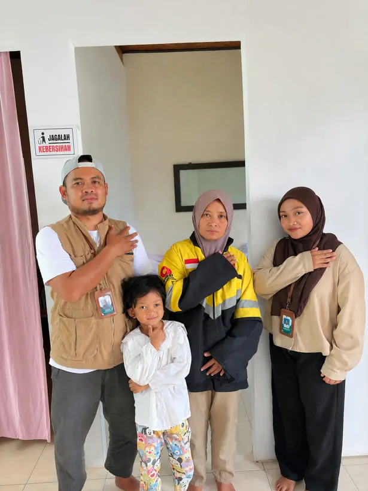
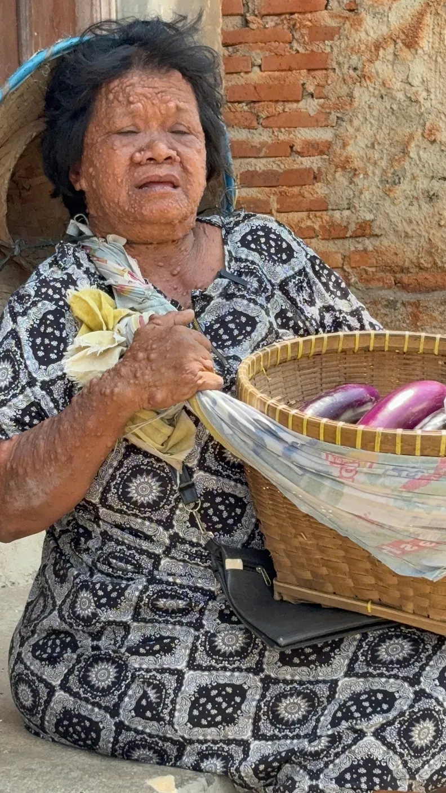
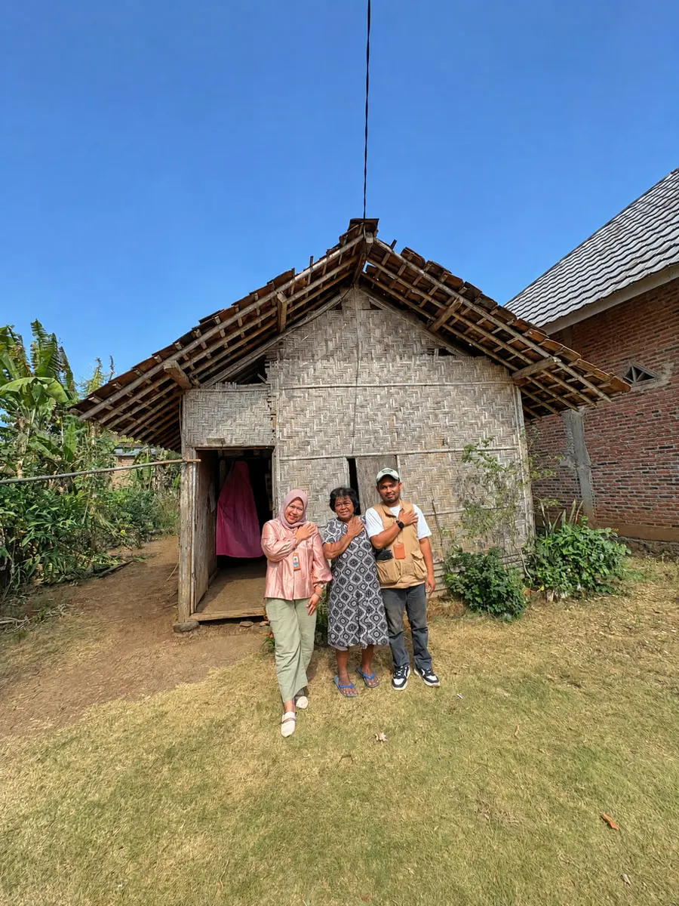
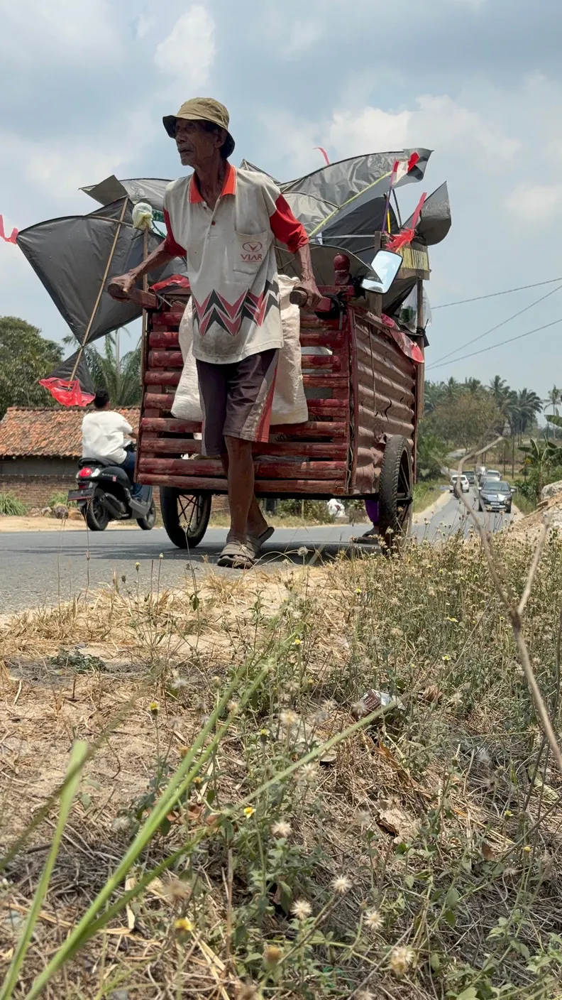
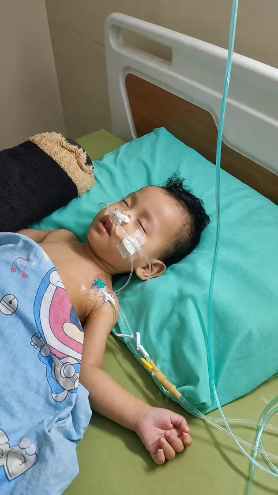

Teman Sembuh
Agar tidak ada warga kurang mampu yang menunda pengobatan karena biaya atau karena tidak ada yang mengantar.
- Bantuan biaya berobat
- Pendampingan di rumah sakit
- Antar-jemput pasien
- Edukasi kesehatan
Yayasan Amaria Pelita Kasih hadir untuk anak-anak yang berjuang melawan sakit, para lansia yang masih bekerja di usia senja, mereka yang hidup sebatang kara, dan saudara-saudara kita penyandang disabilitas. Kami datang, mendengar, lalu mendampingi dengan sungguh-sungguh.

Teman SembuhKesehatan
Teman PeduliEkonomi
Teman BerbagiSosial
Teman MasjidKeagamaan
Puji syukur kami panjatkan ke hadirat Tuhan Yang Maha Esa atas rahmat dan karunia-Nya. Yayasan Amaria Pelita Kasih lahir dari keprihatinan sederhana: masih banyak saudara kita di sekitar yang menanggung sakit, usia senja, dan keterbatasan seorang diri.
Kami bergerak di bidang kesehatan, sosial, kemanusiaan, dan keagamaan. Setiap bantuan yang kami salurkan berangkat dari kunjungan langsung, verifikasi yang cermat, dan pendampingan yang tidak berhenti di hari pertama.
Melalui halaman ini kami memperkenalkan visi, misi, dan kegiatan yayasan secara terbuka, sekaligus membuka pintu kerja sama bagi lembaga, instansi, tenaga kesehatan, tokoh masyarakat, dan perorangan agar manfaatnya semakin luas.


Kepedulian terhadap sesama adalah nilai yang menjaga kehidupan bermasyarakat tetap utuh. Namun di desa-desa kita masih banyak yang menghadapi keterbatasan tanpa ada yang menemani: anak yang harus dirawat berbulan-bulan, kakek yang tetap bekerja di bawah terik, nenek yang tinggal seorang diri.
Kami hadir sebagai jembatan antara mereka yang membutuhkan dan mereka yang ingin membantu, dengan cara yang tertib, terukur, dan bisa dipertanggungjawabkan.
Setiap calon penerima kami kunjungi dan dengarkan ceritanya di rumahnya sendiri.
Bantuan tidak berhenti di penyerahan; kami menemani proses berobat dan pemulihan.
Setiap penyaluran didokumentasikan dan dilaporkan kepada mitra serta masyarakat.
“Menjadi lembaga sosial yang amanah dan berdaya dalam menghadirkan layanan kemanusiaan, khususnya di bidang medis dan sosial, bagi seluruh lapisan masyarakat yang membutuhkan.”
Menyediakan bantuan dan pendampingan medis bagi masyarakat kurang mampu secara tepat, manusiawi, dan berkelanjutan.
Menyalurkan bantuan sosial untuk meningkatkan kualitas hidup masyarakat rentan tanpa membedakan latar belakang apa pun.
Menggalang dan mengelola kepedulian publik secara transparan dan bertanggung jawab.
Membangun kolaborasi dengan tenaga medis, relawan, dan mitra sosial untuk memperluas dampak kemanusiaan.
Menumbuhkan nilai kasih, empati, dan kepedulian sosial dalam setiap program pelayanan.
Setiap program kami sebut teman, karena yang kami tawarkan bukan sekadar bantuan, melainkan kehadiran yang menemani.
Agar tidak ada warga kurang mampu yang menunda pengobatan karena biaya atau karena tidak ada yang mengantar.
Mewujudkan keberdayaan dan kemandirian ekonomi, terutama bagi lansia dan keluarga prasejahtera.
Dukungan dan solusi atas persoalan sosial di masyarakat, dari kebutuhan pokok hingga perhatian bagi yang hidup sendiri.
Gerakan dakwah untuk menguatkan pemahaman Islam di masyarakat, khususnya di pelosok negeri.
Kami memprioritaskan mereka yang paling rentan dan paling jarang tersentuh bantuan.


Bagi keluarga prasejahtera, sakit berat pada anak sering berarti pilihan yang mustahil. Kami membantu penanganan medis dan mendampingi keluarga agar anak-anak dapat sembuh, tumbuh sehat, dan meraih masa depan yang lebih baik.
Di usia yang semestinya untuk beristirahat, masih banyak kakek dan nenek berjualan di tepi jalan atau mendorong gerobak. Program ini meringankan beban mereka agar dapat menjalani hari tua dengan lebih layak, aman, dan sejahtera.
Hidup sendiri di usia lanjut, apalagi dalam kesulitan ekonomi, terasa sangat berat. Kami menyediakan kebutuhan pokok, layanan kesehatan, dan dukungan moral agar mereka merasa diperhatikan dan kembali memiliki harapan.
Keterbatasan fisik tidak semestinya menutup kesempatan. Kami menyediakan alat bantu, terapi, kebutuhan dasar, dan pelatihan kemandirian agar saudara difabel dapat hidup mandiri, bermartabat, dan memiliki kesempatan yang setara.
Alur yang sama kami terapkan untuk setiap penerima manfaat.
Dari warga, perangkat desa, tokoh masyarakat, atau tenaga kesehatan.
Tim datang ke rumah dan memahami kebutuhan yang sebenarnya.
Disusun bersama keluarga: jenis bantuan, jadwal, dan pihak terkait.
Melibatkan rumah sakit, relawan, dan platform kebaikan bila perlu.
Diserahkan langsung, didokumentasikan, dan dilaporkan terbuka.
Kami bekerja sama dengan platform kebaikan tepercaya untuk menjangkau lebih banyak penerima manfaat, baik kategori medis maupun non-medis.
Kolaborasi dengan platform galang kebaikan daring untuk kasus medis dan non-medis.
Kolaborasi untuk memperluas jangkauan kepedulian bagi penerima manfaat di Lampung.
Sumber: Company Profile Yayasan Amaria Pelita Kasih.
Setiap kunjungan kami dokumentasikan sebagai bentuk pertanggungjawaban. Ketuk foto untuk memperbesar.
Simbol cinta kasih yang membawa pesan kebaikan.
Kehidupan, pertumbuhan, dan harapan baru.
Ketulusan memberi dan kesediaan merangkul siapa pun.
Perlindungan, ketenangan, dan kekuatan bagi sesama.
Kedamaian, kepercayaan, dan ketulusan.
Kehangatan, semangat, dan kepedulian.
Yayasan telah disahkan sebagai badan hukum oleh Kementerian Hukum Republik Indonesia.
Organ yayasan sesuai akta pendirian.
Kebaikan menjadi lebih besar ketika dikerjakan bersama.
Untuk perusahaan, instansi, sekolah, dan organisasi yang ingin menjalankan program sosial secara tepat sasaran.
Untuk dokter, perawat, bidan, terapis, dan siapa pun yang bersedia meluangkan waktu dan keahliannya.
Mengetahui tetangga atau kerabat yang sakit, lansia sebatang kara, atau difabel yang membutuhkan? Kabarkan kepada kami.
Belum menemukan jawabannya? Hubungi kami langsung, kami dengan senang hati menjelaskan.
Telepon 0853-7100-0076Ya. Yayasan disahkan oleh Kementerian Hukum RI melalui SK Nomor AHU-0048050.AH.01.02 Tahun 2025, didirikan pada 17 Desember 2025 di Desa Bumi Restu, Kabupaten Lampung Utara.
Prioritas kami adalah anak dari keluarga kurang mampu yang membutuhkan penanganan medis, lansia yang masih harus bekerja, lansia sebatang kara, dan penyandang disabilitas, tanpa membedakan latar belakang.
Hubungi WhatsApp 0853-7100-0076 dengan menyertakan nama, alamat, dan kondisi singkat calon penerima. Tim kami akan menjadwalkan kunjungan verifikasi ke rumah.
Setiap calon penerima dikunjungi dan diverifikasi terlebih dahulu. Penyaluran dilakukan langsung kepada penerima atau keluarganya, didokumentasikan, dan dilaporkan kepada mitra.
Basis kegiatan kami di Kabupaten Lampung Utara dan sekitarnya. Untuk kasus di luar wilayah tersebut, silakan hubungi kami terlebih dahulu.
Tentu. Kami terbuka untuk kerja sama program sosial, kesehatan, dan keagamaan dengan perusahaan, instansi, sekolah, rumah sakit, maupun komunitas.
Silakan berkunjung ke sekretariat atau hubungi kami melalui saluran berikut.
“Setiap langkah kecil kebaikan dapat membawa harapan bagi mereka yang membutuhkan. Sebab, ada cinta dalam setiap kebaikan.”